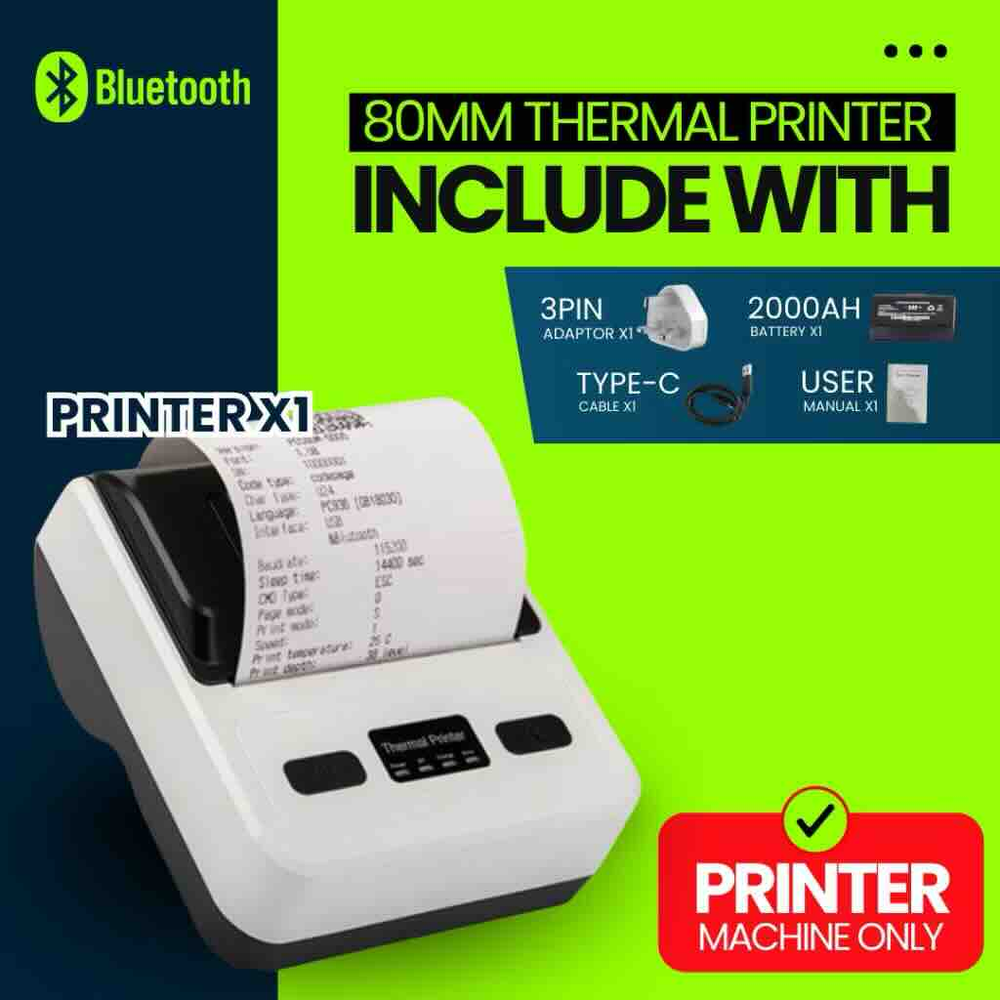

Activities
- Develop thermal printer installation prototype
- Attend Career Fair at UAS
Reflection
Following up from last week's feedback, I started to develop another prototype, which would be an installation type that visitors can interact with, and the results would feed into my design brief 2, creating the assets for the story archive. Inspired by an installation by Jia Wei I saw at the ArtxTech Lab exhibition - Entangled Agencies, this prototype would be a thermal printer that visitors can interact with to export different story prompts, and encouraging them to respond or take it home to spark conversations at home.

The model of the printer is quite important, as I want the printer to be advanced enough to be able to print customisable prompts or even graphic elements if necessary (it was necessary later on). But it should also be portable and easy to install, and definitely Mac compatible. The printer should also be able to load 80mm paper, as that was a size I preferred, else it would be too small. So in the end I found a nice model on Shopee and purchased it (along with printer paper).

This week I also attended the UAS Career Fair, where I met a lot of interesting companies and speakers, and learned more about the design market in Singapore.
Literature This Week
Tasks
- Connect printer and work out how to operate it
- Develop user flow for printer installation
- Consider user testing for all prototypes